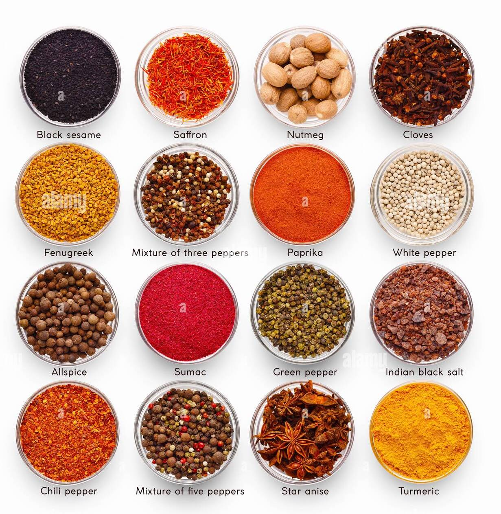

Next Page
Prev Page
www.paraminnovation.org/newsletter
February 2023
A PINCH OF MAGIC: EXOTIC SPICES

Spices enhance taste and offer health benefits like antibacterial and anti-inflammatory effects, improving heart health and digestion.
Next Page
Prev Page